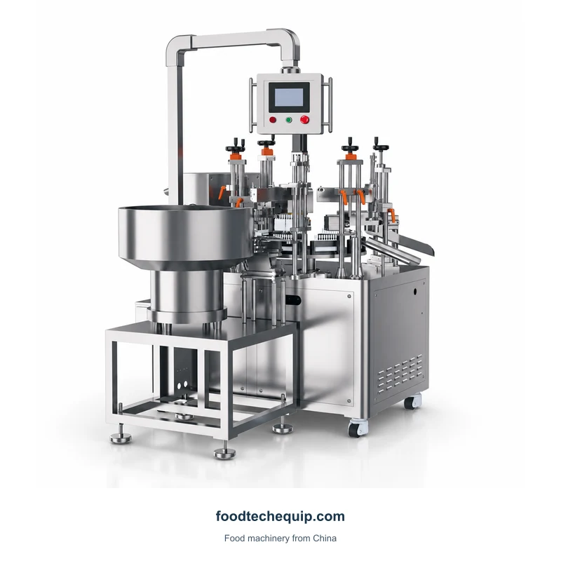

Equipamentos de envase
Envasadora de líquidos em linha
2, 4, 5, 6, 8, 10 ou 12 bicos de envase com bombas magnéticas. Compare o volume de envase e as dimensões das garrafas para cada configuração.
Ver equipamentoInforme a condição do produto na temperatura de envase, a quantidade desejada e a abertura do recipiente. Compare sistemas com bomba ou rosca nessas condições. Defina como os recipientes serão posicionados, envasados e transferidos.
Compare a quantidade de cabeçotes de envase e o tempo de ciclo ↗
2, 4, 5, 6, 8, 10 ou 12 bicos de envase com bombas magnéticas. Compare o volume de envase e as dimensões das garrafas para cada configuração.
Ver equipamento
Linha de envase e pesagem de pó com movimentação de material, esteira transportadora e controles integrados.
Ver equipamento
Envasadora de líquidos em linha com área de trabalho fechada, conexões de alimentação do produto e controles integrados.
Ver equipamento
Uma máquina de envase de líquidos de quatro cabeças com configuração 500.
Ver equipamento
Um sistema de envase de pó por trado com conexões de material e controles integrados.
Ver equipamento
Envasadora em linha com bomba rotativa, transportador e conexões de alimentação do produto.
Ver equipamento
Uma máquina de envase de molho com funil de mistura horizontal e bocal de descarga.
Ver equipamento
Envasadora de líquidos com alimentação sob pressão, reservatório elevado, bico de envase e gabinete com rodízios.
Ver equipamento
Uma unidade compacta de envase de líquidos com bomba de cerâmica, tela sensível ao toque e bico ajustável.
Ver equipamento
Envasadora com bomba, transportador, dois cabeçotes ajustáveis e mangueiras de alimentação do produto.
Ver equipamento
Ilustração do equipamentoEquipamento de envase e selagem de bisnagas de dose única com alimentador em cuba e percurso guiado para as bisnagas.
Ver equipamentoTente uma palavra-chave diferente ou limpe os filtros.
Descrever o material na temperatura de envase, incluindo consistência, partículas e quantidade alvo. Forneça uma amostra para discutir o arranjo de alimentação para sua formulação.
Inclui a abertura do contêiner, dimensões gerais e layout de manuseio. Compare faixas de envase e dados do recipiente para a configuração de cabeçote selecionada.
| Área de seleção | Critérios de comparação | O que fornecer |
|---|---|---|
| Material | Condição no ponto de envase | Consistência, temperatura e partículas |
| Recipiente | Abertura e envelope externo completo | Desenho e amostra do contêiner |
| Configuração | Disposição da cabeça e quantidade alvo | Configuração selecionada e taxa necessária |
O envase estabelece a quantidade do produto no seu formato de recebimento; fechar é uma tarefa separada. Identifique o recipiente real e o fechamento ou indique se uma embalagem flexível é necessária e, em seguida, mostre como as embalagens cheias saem da posição de envase.